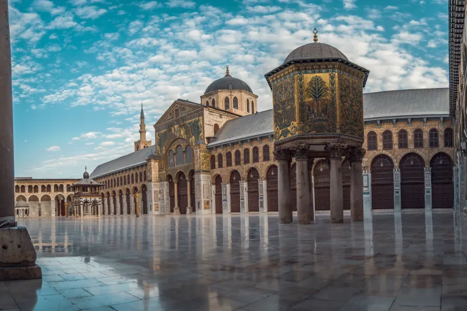

Suriye'nin Mirası

Tarihi ve Arkeolojik Miras
Hüsn Kalesi (diğer adıyla Krak des Chevaliers):
Suriye’nin batısında, Humus şehrine yakın,
stratejik bir tepe üzerinde yer alır.
Diğer Adları:Arapça: (Kalat el-Hısn)
Fransızca: Krak des Chevaliers
Türkçe anlamı: "Şövalyelerin Kalesi"
UNESCO Dünya Mirası Listesi'ne
2006 yılında dahil edilmiştir.
Dünyada en iyi korunmuş Haçlı kalelerinden biri
olarak kabul edilir.
Askeri mimarinin zirvesi olarak görülür.
Suriye'nin kültürel ve tarihi mirasının
en değerli örneklerinden biridir.
Selahaddin Kalesi: Lazkiye ilinin doğusunda,
ormanlık dağlık bir alanda yer alır.
Doğal olarak korunmuş bir kayalık üzerine kurulmuştur.
Kale, Bizans dönemine kadar uzanan
eski bir yerleşim üzerine inşa edilmiştir.
Bizans, Haçlı ve İslam mimarisinin birleşimi görülür.
Doğal kayalıkların içine işlenmiş yapı elemanları
dikkat çeker.
Kalede yazıtlar ve süslemeler de
mevcuttur.
Dini Miras
Emevi Camii, Suriye’nin başkenti Şam’da bulunan
ve İslam tarihinin en önemli ve en eski camilerinden biridir.
Aynı zamanda "Şam Ulu Camii" olarak da bilinir.
